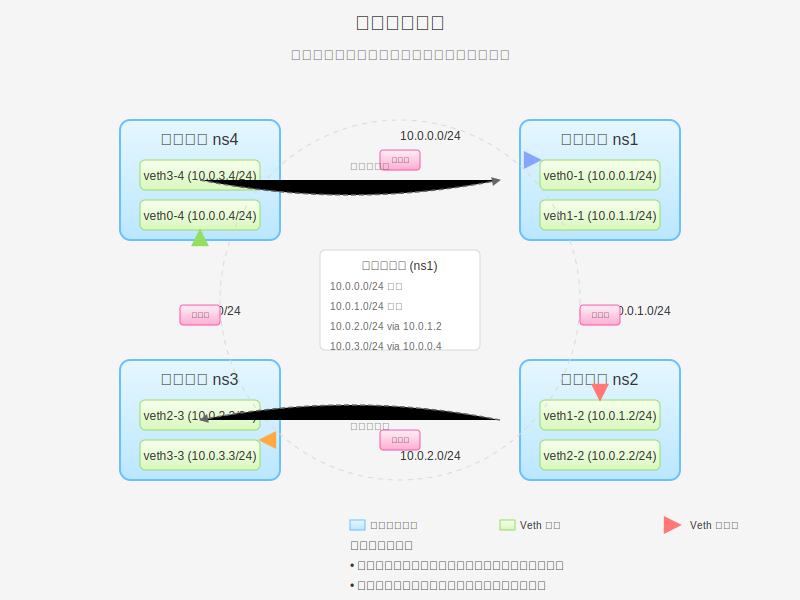

Veth 对环形网络拓扑
环形网络拓扑是一种每个节点都与环中的相邻两个节点直接连接的网络结构，形成一个闭环。在 Linux 网络命名空间和 Veth 对的环境中，这种拓扑提供了冗余路径和良好的扩展性。本页将详细介绍环形拓扑的原理、实现方法和实际应用场景。

环形拓扑原理
环形拓扑是一种网络结构，其中每个节点都与环中的相邻两个节点直接连接，形成一个闭环。在 Linux 网络命名空间的环境中，这意味着每个命名空间都通过 Veth 对连接到环中的相邻两个命名空间。
环形拓扑的特点
- 冗余路径：数据可以顺时针或逆时针传输，提供冗余路径
- 连接数量适中：对于 n 个节点，需要 n 个连接
- 无中心节点：没有中心节点，避免了单点故障和性能瓶颈
- 扩展性好：添加新节点只需要断开环中的一个连接，插入新节点，然后重新连接
- 路由复杂：需要配置路由，使数据可以通过最短路径传输
- 故障影响范围大：单个链路故障会影响整个环的连通性
与其他拓扑的比较
与三角形拓扑相比，环形拓扑的连接数量更少，但通信路径可能更长。与星型拓扑相比，环形拓扑没有中心节点，避免了单点故障和性能瓶颈。与网桥拓扑相比，环形拓扑提供了更好的隔离性，但配置更复杂。
| 特性 |
环形拓扑 |
三角形拓扑 |
星型拓扑 |
网桥拓扑 |
| 连接数量 |
n |
n(n-1)/2 |
n |
n |
| 配置复杂度 |
中等 |
高 |
中等 |
低 |
| 扩展性 |
好 |
差 |
好 |
好 |
| 冗余性 |
好 |
最高 |
低 |
低 |
| 单点故障 |
无 |
无 |
有 |
有 |
环形拓扑在容器网络中的应用
环形拓扑在容器网络中有多种应用场景：
分布式系统
在分布式系统中，环形拓扑常用于实现一致性协议，如 Paxos 和 Raft。每个节点都与环中的相邻节点通信，形成一个分布式共识系统。
容错网络
在需要高可用性的网络中，环形拓扑提供了冗余路径，使网络能够在单个链路故障的情况下继续运行。这对于关键业务应用非常重要。
负载均衡
环形拓扑可以用于实现负载均衡，将流量分散到多个节点上。通过配置路由策略，可以根据流量类型或目标选择不同的路径。
边缘计算
在边缘计算场景中，环形拓扑可以连接多个边缘节点，形成一个分布式边缘计算网络。每个节点都可以与相邻节点共享资源和数据。
基本实验：创建环形拓扑
在这个实验中，我们将创建四个网络命名空间，并使用 Veth 对将它们连接成一个环形拓扑。
实验目标
创建如下拓扑：
- 四个网络命名空间：ns1、ns2、ns3、ns4
- ns1 和 ns2 通过 veth1-1/veth1-2 连接
- ns2 和 ns3 通过 veth2-2/veth2-3 连接
- ns3 和 ns4 通过 veth3-3/veth3-4 连接
- ns4 和 ns1 通过 veth4-4/veth4-1 连接
- 数据可以顺时针或逆时针传输
实验步骤
# 步骤 1：创建四个网络命名空间
sudo ip netns add ns1
sudo ip netns add ns2
sudo ip netns add ns3
sudo ip netns add ns4
# 验证创建结果
ip netns list
# 步骤 2：创建四对 Veth 设备
# ns1 和 ns2 之间的 Veth 对
sudo ip link add veth1-1 type veth peer name veth1-2
# ns2 和 ns3 之间的 Veth 对
sudo ip link add veth2-2 type veth peer name veth2-3
# ns3 和 ns4 之间的 Veth 对
sudo ip link add veth3-3 type veth peer name veth3-4
# ns4 和 ns1 之间的 Veth 对
sudo ip link add veth4-4 type veth peer name veth4-1
# 验证创建结果
ip link show type veth
# 步骤 3：将 Veth 设备分配到相应的网络命名空间
# ns1 的设备
sudo ip link set veth1-1 netns ns1
sudo ip link set veth4-1 netns ns1
# ns2 的设备
sudo ip link set veth1-2 netns ns2
sudo ip link set veth2-2 netns ns2
# ns3 的设备
sudo ip link set veth2-3 netns ns3
sudo ip link set veth3-3 netns ns3
# ns4 的设备
sudo ip link set veth3-4 netns ns4
sudo ip link set veth4-4 netns ns4
# 验证分配结果
sudo ip netns exec ns1 ip link show
sudo ip netns exec ns2 ip link show
sudo ip netns exec ns3 ip link show
sudo ip netns exec ns4 ip link show
# 步骤 4：配置 IP 地址
# ns1 的设备
sudo ip netns exec ns1 ip addr add 10.0.1.1/24 dev veth1-1
sudo ip netns exec ns1 ip addr add 10.0.4.1/24 dev veth4-1
sudo ip netns exec ns1 ip link set veth1-1 up
sudo ip netns exec ns1 ip link set veth4-1 up
sudo ip netns exec ns1 ip link set lo up
# ns2 的设备
sudo ip netns exec ns2 ip addr add 10.0.1.2/24 dev veth1-2
sudo ip netns exec ns2 ip addr add 10.0.2.2/24 dev veth2-2
sudo ip netns exec ns2 ip link set veth1-2 up
sudo ip netns exec ns2 ip link set veth2-2 up
sudo ip netns exec ns2 ip link set lo up
# ns3 的设备
sudo ip netns exec ns3 ip addr add 10.0.2.3/24 dev veth2-3
sudo ip netns exec ns3 ip addr add 10.0.3.3/24 dev veth3-3
sudo ip netns exec ns3 ip link set veth2-3 up
sudo ip netns exec ns3 ip link set veth3-3 up
sudo ip netns exec ns3 ip link set lo up
# ns4 的设备
sudo ip netns exec ns4 ip addr add 10.0.3.4/24 dev veth3-4
sudo ip netns exec ns4 ip addr add 10.0.4.4/24 dev veth4-4
sudo ip netns exec ns4 ip link set veth3-4 up
sudo ip netns exec ns4 ip link set veth4-4 up
sudo ip netns exec ns4 ip link set lo up
# 验证配置
sudo ip netns exec ns1 ip addr
sudo ip netns exec ns2 ip addr
sudo ip netns exec ns3 ip addr
sudo ip netns exec ns4 ip addr
# 步骤 5：配置路由
# ns1 的路由
sudo ip netns exec ns1 ip route add 10.0.2.0/24 via 10.0.1.2 # 顺时针到 ns3
sudo ip netns exec ns1 ip route add 10.0.3.0/24 via 10.0.4.4 # 逆时针到 ns3
# ns2 的路由
sudo ip netns exec ns2 ip route add 10.0.3.0/24 via 10.0.2.3 # 顺时针到 ns3
sudo ip netns exec ns2 ip route add 10.0.4.0/24 via 10.0.1.1 # 逆时针到 ns4
# ns3 的路由
sudo ip netns exec ns3 ip route add 10.0.4.0/24 via 10.0.3.4 # 顺时针到 ns4
sudo ip netns exec ns3 ip route add 10.0.1.0/24 via 10.0.2.2 # 逆时针到 ns1
# ns4 的路由
sudo ip netns exec ns4 ip route add 10.0.1.0/24 via 10.0.4.1 # 顺时针到 ns1
sudo ip netns exec ns4 ip route add 10.0.2.0/24 via 10.0.3.3 # 逆时针到 ns2
# 验证路由配置
sudo ip netns exec ns1 ip route
sudo ip netns exec ns2 ip route
sudo ip netns exec ns3 ip route
sudo ip netns exec ns4 ip route
# 步骤 6：测试连通性
# 从 ns1 测试
sudo ip netns exec ns1 ping -c 3 10.0.1.2 # 直接连接到 ns2
sudo ip netns exec ns1 ping -c 3 10.0.4.4 # 直接连接到 ns4
sudo ip netns exec ns1 ping -c 3 10.0.2.3 # 通过 ns2 连接到 ns3
sudo ip netns exec ns1 ping -c 3 10.0.3.4 # 通过 ns4 连接到 ns3
# 从 ns2 测试
sudo ip netns exec ns2 ping -c 3 10.0.1.1 # 直接连接到 ns1
sudo ip netns exec ns2 ping -c 3 10.0.2.3 # 直接连接到 ns3
sudo ip netns exec ns2 ping -c 3 10.0.3.4 # 通过 ns3 连接到 ns4
sudo ip netns exec ns2 ping -c 3 10.0.4.4 # 通过 ns1 连接到 ns4
# 从 ns3 测试
sudo ip netns exec ns3 ping -c 3 10.0.2.2 # 直接连接到 ns2
sudo ip netns exec ns3 ping -c 3 10.0.3.4 # 直接连接到 ns4
sudo ip netns exec ns3 ping -c 3 10.0.1.1 # 通过 ns2 连接到 ns1
sudo ip netns exec ns3 ping -c 3 10.0.4.4 # 通过 ns4 连接到 ns4
# 从 ns4 测试
sudo ip netns exec ns4 ping -c 3 10.0.3.3 # 直接连接到 ns3
sudo ip netns exec ns4 ping -c 3 10.0.4.1 # 直接连接到 ns1
sudo ip netns exec ns4 ping -c 3 10.0.1.1 # 通过 ns1 连接到 ns1
sudo ip netns exec ns4 ping -c 3 10.0.2.2 # 通过 ns3 连接到 ns2
# 步骤 7：使用 traceroute 查看数据包路径
# 安装 traceroute（如果尚未安装）
sudo apt-get update
sudo apt-get install -y traceroute
# 从 ns1 到 ns3 的路径（顺时针）
sudo ip netns exec ns1 traceroute 10.0.2.3
# 从 ns1 到 ns3 的路径（逆时针）
sudo ip netns exec ns1 traceroute 10.0.3.3
# 步骤 8：模拟链路故障
# 关闭 ns1 和 ns2 之间的链路
sudo ip netns exec ns1 ip link set veth1-1 down
sudo ip netns exec ns2 ip link set veth1-2 down
# 测试连通性
sudo ip netns exec ns1 ping -c 3 10.0.2.3 # 应该通过 ns4 和 ns3 连接到 ns3
sudo ip netns exec ns2 ping -c 3 10.0.4.4 # 应该通过 ns3 和 ns4 连接到 ns4
# 查看路由变化
sudo ip netns exec ns1 ip route
sudo ip netns exec ns2 ip route
# 步骤 9：恢复链路
sudo ip netns exec ns1 ip link set veth1-1 up
sudo ip netns exec ns2 ip link set veth1-2 up
# 测试连通性
sudo ip netns exec ns1 ping -c 3 10.0.2.3 # 应该再次通过 ns2 连接到 ns3
sudo ip netns exec ns2 ping -c 3 10.0.4.4 # 应该再次通过 ns1 连接到 ns4
# 查看路由变化
sudo ip netns exec ns1 ip route
sudo ip netns exec ns2 ip route
# 步骤 10：清理实验环境
sudo ip netns delete ns1
sudo ip netns delete ns2
sudo ip netns delete ns3
sudo ip netns delete ns4
# 验证清理结果
ip netns list
通过这个实验，我们成功创建了一个环形拓扑，使四个网络命名空间形成一个环。数据可以顺时针或逆时针传输，提供冗余路径。当一个链路故障时，数据可以通过另一个方向继续传输。
高级实验：动态路由协议在环形拓扑中的应用
在基本的环形拓扑中，我们手动配置了静态路由。在这个高级实验中，我们将使用动态路由协议（如 OSPF）自动发现和维护路由。
实验目标
创建如下拓扑：
- 四个网络命名空间：ns1、ns2、ns3、ns4
- 与基本实验相同的连接结构
- 使用 OSPF 动态路由协议自动发现和维护路由
- 模拟链路故障，观察路由自动调整
这个实验的详细步骤将在 环形拓扑与 OSPF 页面中介绍。
环形拓扑的性能分析
环形拓扑在性能方面有其独特的优势和劣势。以下是一些关键性能指标的分析：
延迟
在环形拓扑中，最坏情况下，两个节点之间的通信需要经过环的一半节点。随着节点数量的增加，最大延迟也会增加。但是，通过优化路由策略，可以选择最短路径，减少延迟。
吞吐量
环形拓扑的吞吐量取决于环中最慢的链路。由于每个节点都有两个网络接口，环形拓扑可以提供较好的吞吐量。不同方向的通信可以并行进行，提高整体吞吐量。
可靠性
环形拓扑提供了冗余路径，当一个链路故障时，数据可以通过另一个方向继续传输。这使得环形拓扑在可靠性方面表现较好。但是，如果两个或更多链路同时故障，环可能会断开，导致部分节点无法通信。
扩展性
环形拓扑的扩展性较好。添加新节点只需要断开环中的一个连接，插入新节点，然后重新连接。连接数量与节点数量成线性关系，不会像三角形拓扑那样呈指数增长。
资源消耗
环形拓扑需要为每个节点配置两个网络接口，资源消耗适中。与三角形拓扑相比，环形拓扑的资源消耗更低；与星型拓扑相比，环形拓扑的资源消耗略高。
总体而言，环形拓扑适合对冗余性和扩展性要求高、规模中等的网络环境。
环形拓扑的应用场景
环形拓扑在多种应用场景中都有广泛的应用：
分布式系统
在分布式系统中，环形拓扑常用于实现一致性协议，如 Paxos 和 Raft。每个节点都与环中的相邻节点通信，形成一个分布式共识系统。例如，Apache Cassandra 数据库使用环形拓扑来组织节点，实现数据的分布式存储和复制。
容错网络
在需要高可用性的网络中，环形拓扑提供了冗余路径，使网络能够在单个链路故障的情况下继续运行。例如，电信骨干网常采用环形拓扑，确保网络的高可用性。
工业控制网络
在工业控制网络中，环形拓扑常用于连接控制设备，如 PLC（可编程逻辑控制器）和 SCADA（监控与数据采集）系统。环形拓扑提供了冗余路径，确保控制信号的可靠传输。
边缘计算
在边缘计算场景中，环形拓扑可以连接多个边缘节点，形成一个分布式边缘计算网络。每个节点都可以与相邻节点共享资源和数据，实现边缘计算的协作。
物联网
在物联网应用中，环形拓扑可以连接多个传感器节点，形成一个自组织网络。每个节点都可以与相邻节点通信，实现数据的收集和传输。